Blue Rose Methods
Last update: 06/07/2020 4am EST.
Contact me if you see any mistakes or if you have suggestions.
Blue roses are the most difficult flowers to obtain in the game.
Our methods have been extensively tested and simulated so you can pick the most optimized method for
your needs!
Contents
Information:
Methods:
- Asteriation 4-Step Method
- Asteriation Genepool Method
- BackwardsN Genepool Method
- Paleh Method (v2)
- Folklore Method
Which path is right for me?
- "I'm a beginner, I want something easy and straight-foward!": Asteriation 4-Step method.
- "I know what I'm doing, I want the absolute fastest method!": Asteriation Genepool method.
- "I'm a combination of both!": See chart below!
Glossary
| Clone-tolerant: | A method is clone-tolerant if all the necessary intermediary offsprings are different from the parents. If a method is not clone-tolerant, you must use clone-resistant layouts. |
|---|---|
| Examples: | |
| Methodical: | A methodical path has formulated % chances at every single step. Genepool methods, on the other hand, involve throwing a bunch of flowers with unknown genes and hoping that some of them are the right combination (can be some luck involved!) |
| Pairs: | This typically refers to the number of pairs you can fit in your available garden
space. Note that for simulations, we use certain number of pairs at every single step. This means that methods with more steps are simulated with more intermediate pairs. For a basic isolated pairs layout, 32 pairs = 64 flowers, plus when you consider the necessary space inbetween, that means you'd need an 11x15 area! Plan accordingly! |
| Testing: | Paleh and Folklore methods need purple rose 𝑥 testing. In both methods, we will need to tell whether an unknown purple rose 𝑥 [0?20] is a purple rose α [0020] or purple rose β [0120]. You need to be super careful during this extra step to properly differentiate between 2 flowers that look exactly alike! |
| Visitors: | Having visitors from other islands water your flowers significantly increase your base production rate (from 5% up to 80%!). [visitor watering guide] |
How fast is each path?
Expected time with 5 visitors (95 percentile)
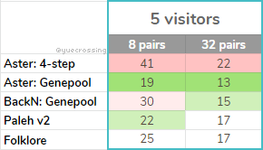Metric: number of days to 1 blue rose from planting seeds.
For expected time with 0 visitors and more numbers, check below!
95 percentile
Most players will get their first blue rose before these # of days. (95 out of 100)
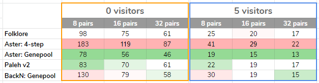*Note: for 8 pairs, although BackN's average
(median) time is faster than Paleh, it takes significantly longer if you are unlucky (95
percentile).
Simulation parameters:
Asteriation's 4-Step Method
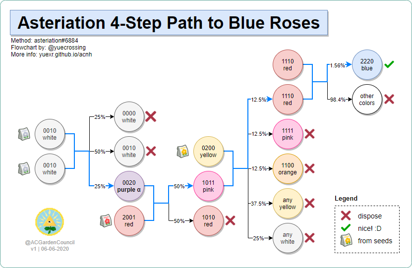| Introduction: | Simple and straightforward method for beginners. |
|---|---|
| Difficulty: | Easy |
| Strengths: | Clone-tolerant, you don't have to worry about clones (although clone-resistant layouts
are always recommended). Also methodical, each step is organized and has calculated %
rates. |
| Weaknesses: | Slowest method, but not bad if you have visitors watering. However, difference is very significant if you do not have Nintendo Switch Online or otherwise cannot get visitors to help water your flowers. We strongly advise using another method if you are in this situation. | Layouts: | For step 1 and step 4 (when you are breeding two white rose [0010] and breeding two red rose [1110]), use a dense layout for same-parent breeding such as turtle or tetris-t. For the other steps where the parents are different colors, you can use any different-parent breeding layouts. |
| Credits: | Method: asteriation#6884. |
| Other pictures: | Ellie33#5074's visual guide: |
| 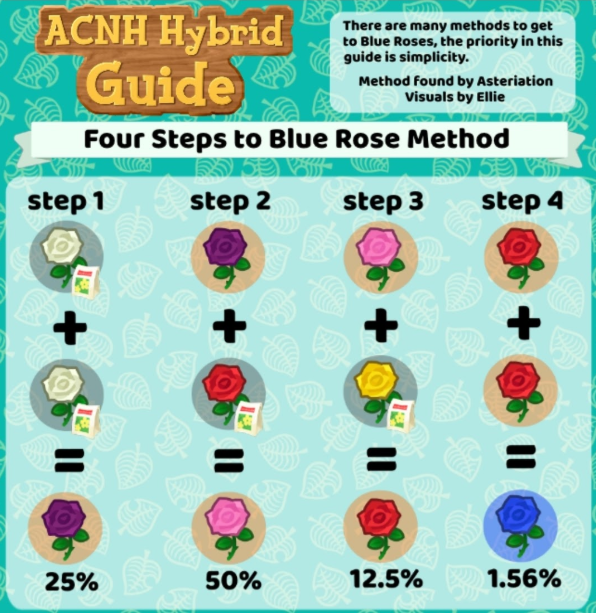 |
Asteriation Genepool Method
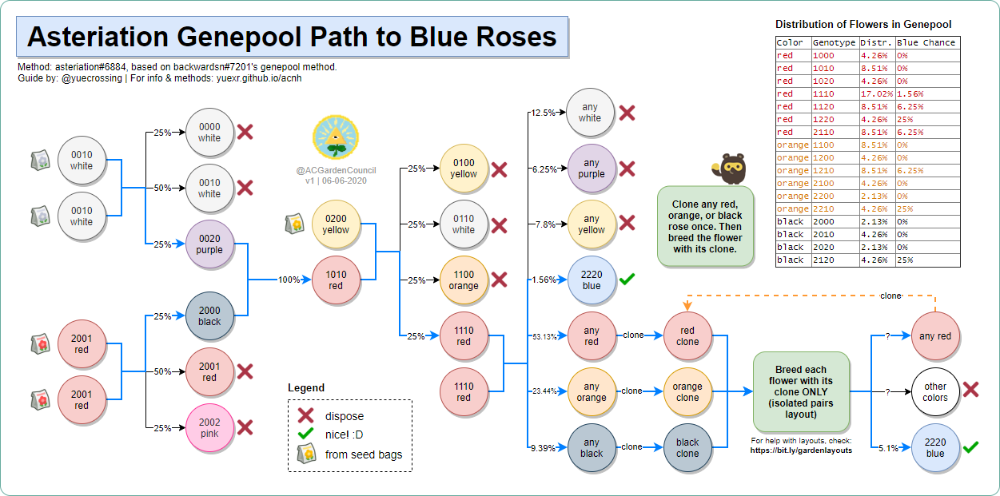| Introduction: | The fastest method! Involves a genepool and knowledge of cloning though. |
|---|---|
| Difficulty: | Hard |
| Strengths: | Gotta go fast. |
| Weaknesses: | Not clone-tolerant. You must learn how to avoid clones, and you must use clone-resistant
layouts for the breeding steps. You will need to know how to clone for the cloning
step. You will be utilizing a genepool, which has an unknown % chance of making a blue (although the average is ~5.1%). |
| Layouts: | We recommend the standard isolated pairs layout, or its other variations during the breeding steps. For the cloning and subsequent self-breeding step: You must be able to identify the parent of the clone while cloning AND you must ensure the flower then breed with their own clone (IP). The layout below will allow you to do both steps. Blockers (e.g. hard pathing, fencing, etc.) are necessary. |
| Suggested layout: | |
| Additional Instructions: | Optional steps if you have space:
|
| Credits: | Method: asteriation#6884, based on backwardsn#7201's genepool method. [original document] |
BackwardsN Genepool Method
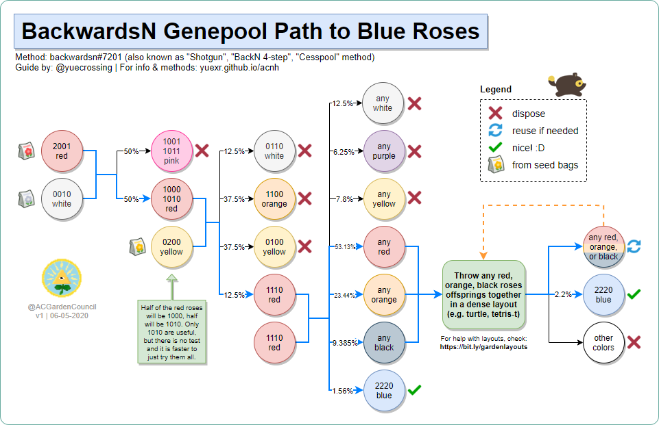| Introduction: | Also known as "Shotgun, BackN's 4-step, and Cesspool" methods. This is the original "genepool" method, and it name speaks for itself. This path is good for if you have a LOOOOT of space. A lot a lot. |
|---|---|
| Difficulty: | Medium |
| Strengths: | Great balance of speed and simplicity. It is easier than Aster's Genepool, and only a
little slower. |
| Weaknesses: | Not recommended for players who have limited garden space. You are relying on luck! You will be utilizing a genepool, which has an unknown % chance of making a blue (although the average is ~2.2%). |
| Layouts: | For steps 1 and 2: we recommend the standard isolated pairs
layout (or other variations). For step 3 (1110 red x 1110 red) and 4 (genepool): any dense layouts such as turtle or tetris-t (use this despite genepool not being identical parents). During the genepool step, you can keep expanding the "field" of red, orange, and black roses with additional offsprings. |
| Credits: | Method: backwardsn#7201 [original document] |
| Other pictures: | Visual version: (by @kamirose). |
| 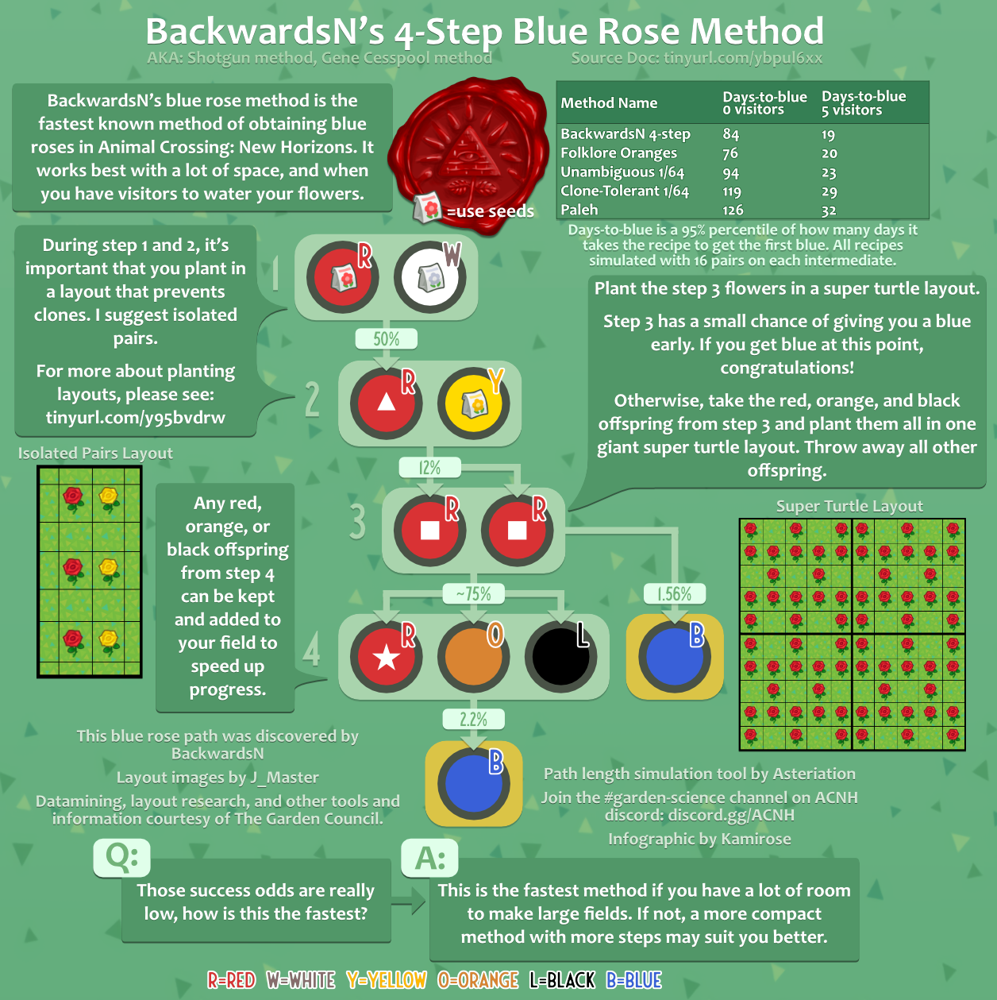 |
Paleh Method (v2)
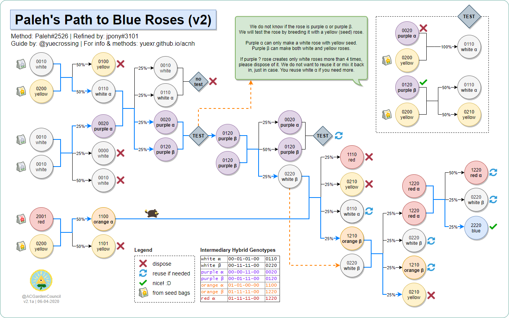| Introduction: | Great method for if you have less available garden space to work with! Although it has a slightly slower than BackN's method on average (using 8 pairs), it has a significantly lower 95 percentile. |
|---|---|
| Difficulty: | Hard |
| Strengths: | Methodical, each step is organized and has calculated % rates. Although there are many steps, the % yield at every step is fairly high (lowest is 25%) compared to 1.56% in some other methods. (You don't have to rely as much on luck). |
| Weaknesses: | Not clone-tolerant. You must learn how to avoid clones, and you must use clone-resistant
layouts. You must also need to do purple rose 𝑥 testing. |
| Layouts: | You MUST use clone-resistant layouts for this method. We recommend the standard isolated pairs layout, or its other variations (see link for details). |
| Additional Instructions: | Extra notes if you have available space:
|
| Credits: | Method: Paleh#2526, refined by: jpony#3101. [original document] |
| Other pictures: | v2.0: incorrectly had main method as "alternate". |
|
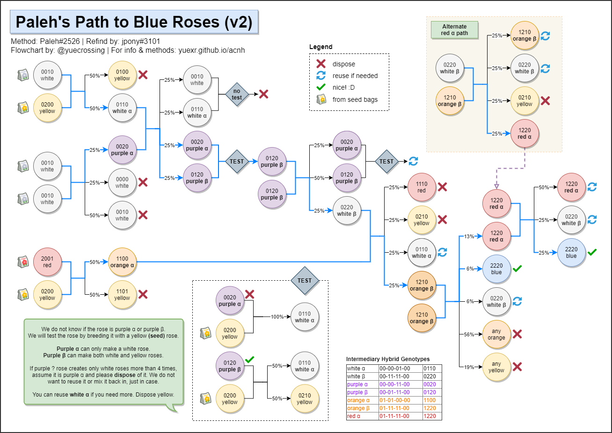 Leaving this up for those who were already on the old (slower) path. Will be removing this soon, please use the updated version! |
Folklore Method
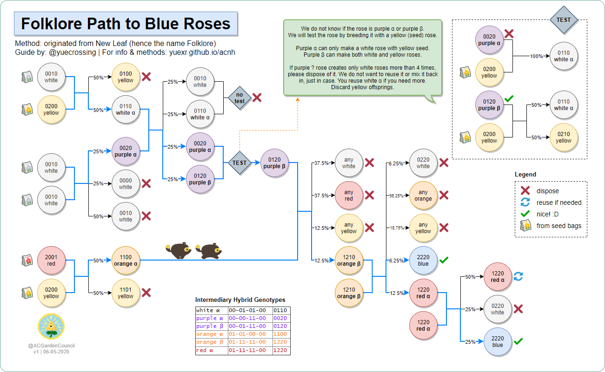| Introduction: | Standard original method. Average in every way possible. (originates from New Leaf!) |
|---|---|
| Difficulty: | Medium |
| Strengths: | Methodical, each step is organized and has calculated % rates. |
| Weaknesses: | Not clone-tolerant. You must learn how to avoid clones, and you must use clone-resistant
layouts. You must also need to do purple rose 𝑥 testing. |
| Layouts: | We recommend the standard isolated pairs layout, or its other variations (see link for details). |
| Credits: | Method: originates from ACNL guide. |
| Other pictures: | @co32h versions: |
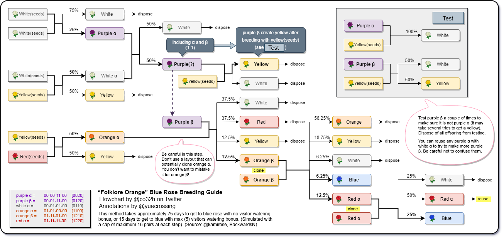  |
Credits:
- Guide: @yuecrossing
- Dataminers: @aiterusawato, Paleh#2526, @_Ninji
- Methods research & analysis: asteriation#6884, backwardsn#7201, Paleh#2526, jpony#3101
- Speed simulations: asteriation#6884
- Additional visuals: @yuecrossing, @co32h, @kamirose, Ellie33#5074
- Special thanks: Garden Council
Tools:
- Asteriation's Flower Breeding Path Simulator (asteriation#6884)
- Aeon's Flower Simulator (@AeonSake)
yue's to do list
- make simplified visual version of each flowchart